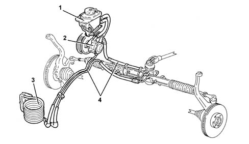

4130B power steering hydraulic sytem
- Path
- Descriptions > 41 STEERING > 4130 POWER ASSISTED STEERING > 4130B power steering hydraulic sytem
- Kind
- system description
- Applies to
- engines: 1.6 TS, 2.0 TS; all production periods
- Interactive page
- https://sloeber94.github.io/elrnDB-a147/en/#/3022497
Applies to: engines: 1.6 TS, 2.0 TS; all production periods
SPECIFICATIONS:
VIEW OF SYSTEM

1 - Power assisted steering fluid reservoir 2 - Power steering pump 3 - Cooling coil 4 - Pipes
The power steering hydraulic system, standard for all versions, has a 'Saginaw' aluminium pump which contributes significantly to silence of operation.
A further contribution to silence is provided by the solutions adopted for the system:
- high-pressure fluid pipes of optimum length and shape with internal resonators which damp fluid pulsing;
- cooling coil to keep the power steering fluid temperature low and avoid cavitation.
The fluid reservoir is located to the left of the engine's top guard, near the power steering pump. It contains a filter which retains impurities larger than 100 micron.